The original, as published: Microsoft Learn, Windows Presentation Foundation Overview. CC BY 4.0, https://creativecommons.org/licenses/by/4.0/. Imported as published, from https://learn.microsoft.com/en-us/dotnet/desktop/wpf/overview/ https://learn.microsoft.com/en-us/dotnet/desktop/wpf/overview/
Note
Access to this page requires authorization. You can try signing in or changing directories.
Access to this page requires authorization. You can try changing directories.
Welcome to the Desktop Guide for Windows Presentation Foundation (WPF), a UI framework that's resolution-independent and uses a vector-based rendering engine, built to take advantage of modern graphics hardware. WPF provides a comprehensive set of application-development features that include Extensible Application Markup Language (XAML), controls, data binding, layout, 2D and 3D graphics, animation, styles, templates, documents, media, text, and typography. WPF is part of .NET, so you can build applications that incorporate other elements of the .NET API.
WPF has two implementations:
.NET version (this guide):
An open-source implementation of WPF hosted on GitHub, which runs on .NET. The XAML designer requires, at a minimum, Visual Studio 2019 version 16.8. But depending on your version of .NET, you may be required to use a newer version of Visual Studio.
Even though .NET is a cross-platform technology, WPF only runs on Windows.
.NET Framework 4 version:
.NET Framework implementation of WPF that's supported by Visual Studio 2019 and Visual Studio 2017.
.NET Framework 4 is a Windows-only version of .NET and is considered a Windows Operating System component. This version of WPF is distributed with .NET Framework.
This overview is intended for newcomers and covers the key capabilities and concepts of WPF. To learn how to create a WPF app, see Tutorial: Create a new WPF app.
When you upgrade your application from .NET Framework to .NET, you benefit from:
To upgrade your application, see How to upgrade a WPF desktop app to .NET.
WPF exists as a subset of .NET types that are mostly located in the System.Windows namespace. If you've previously built applications with .NET using frameworks like ASP.NET and Windows Forms, the fundamental WPF programming experience should be familiar. You:
WPF includes more programming constructs that enhance properties and events: dependency properties and routed events.
WPF lets you develop an application using both markup and code-behind, an experience with which ASP.NET developers should be familiar. You generally use XAML markup to implement the appearance of an application while using managed programming languages (code-behind) to implement its behavior. This separation of appearance and behavior has the following benefits:
Development and maintenance costs are reduced because appearance-specific markup isn't tightly coupled with behavior-specific code.
Development is more efficient because designers can implement an application's appearance simultaneously with developers who are implementing the application's behavior.
Globalization and localization for WPF applications is simplified.
XAML is an XML-based markup language that implements an application's appearance declaratively. You typically use it to define windows, dialog boxes, pages, and user controls, and to fill them with controls, shapes, and graphics.
The following example uses XAML to implement the appearance of a window that contains a single button:
<Window
xmlns="http://schemas.microsoft.com/winfx/2006/xaml/presentation"
Title="Window with button"
Width="250" Height="100">
<!-- Add button to window -->
<Button Name="button">Click Me!</Button>
</Window>
Specifically, this XAML defines a window and a button by using the Window and Button elements. Each element is configured with attributes, such as the Window element's Title attribute to specify the window's title-bar text. At run time, WPF converts the elements and attributes that are defined in markup to instances of WPF classes. For example, the Window element is converted to an instance of the Window class whose Title property is the value of the Title attribute.
The following figure shows the user interface (UI) that is defined by the XAML in the previous example:
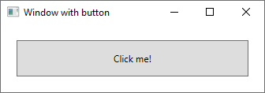
Since XAML is XML-based, the UI that you compose with it is assembled in a hierarchy of nested elements that's known as an element tree. The element tree provides a logical and intuitive way to create and manage UIs.
The main behavior of an application is to implement the functionality that responds to user interactions. For example, clicking a menu or button and calling business logic and data access logic in response. In WPF, this behavior is implemented in code that's associated with markup. This type of code is known as code-behind. The following example shows the updated markup from the previous example and the code-behind:
<Window
xmlns="http://schemas.microsoft.com/winfx/2006/xaml/presentation"
xmlns:x="http://schemas.microsoft.com/winfx/2006/xaml"
x:Class="SDKSample.AWindow"
Title="Window with button"
Width="250" Height="100">
<!-- Add button to window -->
<Button Name="button" Click="button_Click">Click Me!</Button>
</Window>
The updated markup defines the xmlns:x namespace and maps it to the schema that adds support for the code-behind types. The x:Class attribute associates a code-behind class to this specific XAML markup. Considering this attribute is declared on the <Window> element, the code-behind class must inherit from the Window class.
using System.Windows;
namespace SDKSample
{
public partial class AWindow : Window
{
public AWindow()
{
// InitializeComponent call is required to merge the UI
// that is defined in markup with this class, including
// setting properties and registering event handlers
InitializeComponent();
}
void button_Click(object sender, RoutedEventArgs e)
{
// Show message box when button is clicked.
MessageBox.Show("Hello, Windows Presentation Foundation!");
}
}
}
Namespace SDKSample
Partial Public Class AWindow
Inherits System.Windows.Window
Public Sub New()
' InitializeComponent call is required to merge the UI
' that is defined in markup with this class, including
' setting properties and registering event handlers
InitializeComponent()
End Sub
Private Sub button_Click(ByVal sender As Object, ByVal e As RoutedEventArgs)
' Show message box when button is clicked.
MessageBox.Show("Hello, Windows Presentation Foundation!")
End Sub
End Class
End Namespace
InitializeComponent is called from the code-behind class's constructor to merge the UI that's defined in markup with the code-behind class. (InitializeComponent is generated for you when your application is built, which is why you don't need to implement it manually.) The combination of x:Class and InitializeComponent ensure that your implementation is correctly initialized whenever it's created.
Notice that in the markup the <Button> element defined a value of button_Click for the Click attribute. With the markup and code-behind initialized and working together, the Click event for the button is automatically mapped to the button_Click method. When the button is clicked, the event handler is invoked and displays a message box by calling the System.Windows.MessageBox.Show method.
The following figure shows the result when the button is clicked:
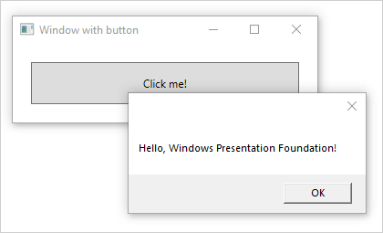
Controls most often detect and respond to user input. The WPF input system uses both direct and routed events to support text input, focus management, and mouse positioning.
Applications often have complex input requirements. WPF provides a command system that separates user-input actions from the code that responds to those actions. The command system allows for multiple sources to invoke the same command logic. For example, take the common editing operations used by different applications: Copy, Cut, and Paste. These operations can be invoked using different user actions if they're implemented using commands.
The application model delivers user experiences through constructed controls. In WPF, control is an umbrella term that applies to a category of WPF classes that have the following characteristics:
For more information, see Controls.
The built-in WPF controls are listed here:
Buttons: Button and RepeatButton.
Date Display and Selection: Calendar and DatePicker.
Dialog Boxes: OpenFileDialog, PrintDialog, and SaveFileDialog.
Digital Ink: InkCanvas and InkPresenter.
Documents: DocumentViewer, FlowDocumentPageViewer, FlowDocumentReader, FlowDocumentScrollViewer, and StickyNoteControl.
Input: TextBox, RichTextBox, and PasswordBox.
Layout: Border, BulletDecorator, Canvas, DockPanel, Expander, Grid, GridView, GridSplitter, GroupBox, Panel, ResizeGrip, Separator, ScrollBar, ScrollViewer, StackPanel, Thumb, Viewbox, VirtualizingStackPanel, Window, and WrapPanel.
Media: Image, MediaElement, and SoundPlayerAction.
Menus: ContextMenu, Menu, and ToolBar.
Navigation: Frame, Hyperlink, Page, NavigationWindow, and TabControl.
Selection: CheckBox, ComboBox, ListBox, RadioButton, and Slider.
User Information: AccessText, Label, Popup, ProgressBar, StatusBar, TextBlock, and ToolTip.
When you create a user interface, you arrange your controls by location and size to form a layout. A key requirement of any layout is to adapt to changes in window size and display settings. Rather than forcing you to write code to adapt a layout in these circumstances, WPF provides a first-class, extensible layout system.
The cornerstone of the layout system is relative positioning, which increases the ability to adapt to changing window and display conditions. The layout system also manages the negotiation between controls to determine the layout. The negotiation is a two-step process: first, a control tells its parent what location and size it requires. Second, the parent tells the control what space it can have.
The layout system exposes itself to child controls through base WPF classes. For common layouts such as grids, stacking, and docking, WPF includes several layout controls:
Canvas: Child controls provide their own layout.
DockPanel: Child controls are aligned to the edges of the panel.
Grid: Child controls are positioned by rows and columns.
StackPanel: Child controls are stacked either vertically or horizontally.
VirtualizingStackPanel: Child controls are virtualized and arranged on a single line that is either horizontally or vertically oriented.
WrapPanel: Child controls are positioned in left-to-right order and wrapped to the next line when there isn't enough space on the current line.
The following example uses a DockPanel to lay out several TextBox controls:
<Window
xmlns="http://schemas.microsoft.com/winfx/2006/xaml/presentation"
xmlns:x="http://schemas.microsoft.com/winfx/2006/xaml"
x:Class="SDKSample.LayoutWindow"
Title="Layout with the DockPanel" Height="143" Width="319">
<!--DockPanel to layout four text boxes-->
<DockPanel>
<TextBox DockPanel.Dock="Top">Dock = "Top"</TextBox>
<TextBox DockPanel.Dock="Bottom">Dock = "Bottom"</TextBox>
<TextBox DockPanel.Dock="Left">Dock = "Left"</TextBox>
<TextBox Background="White">This TextBox "fills" the remaining space.</TextBox>
</DockPanel>
</Window>
The DockPanel allows the child TextBox controls to tell it how to arrange them. To do this, the DockPanel implements a Dock attached property that is exposed to the child controls to allow each of them to specify a dock style.
Note
A property that's implemented by a parent control for use by child controls is a WPF construct called an attached property.
The following figure shows the result of the XAML markup in the preceding example:
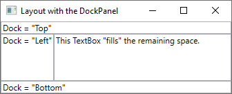
Most applications provide users with the means to view and edit data. For WPF applications, many different .NET data access libraries such as SQL and Entity Framework Core already provide the work of storing and accessing data. After the data is accessed and loaded into an application's managed objects, the hard work for WPF applications begins. Essentially, this involves two things:
Copying the data from the managed objects into controls, where users can display and edit the data.
Ensuring that changes made to data using controls are copied back to the managed objects.
To simplify application development, WPF provides a powerful data binding engine to automatically handle these steps. The core unit of the data binding engine is the Binding class, whose job is to bind a control (the binding target) to a data object (the binding source). This relationship is illustrated by the following figure:
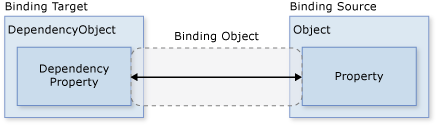
WPF supports declaring bindings in the XAML markup directly. For example, the following XAML code binds the Text property of the TextBox to the Name property of an object using the "{Binding ... }" XAML syntax. This assumes there's a data object set to the DataContext property of the Window with a Name property.
<Window
xmlns="http://schemas.microsoft.com/winfx/2006/xaml/presentation"
xmlns:x="http://schemas.microsoft.com/winfx/2006/xaml"
x:Class="SDKSample.DataBindingWindow">
<!-- Bind the TextBox to the data source (TextBox.Text to Person.Name) -->
<TextBox Name="personNameTextBox" Text="{Binding Path=Name}" />
</Window>
The WPF data binding engine provides more than just binding; it provides validation, sorting, filtering, and grouping. Furthermore, data binding supports the use of data templates to create custom user interface for bound data.
For more information, see Data binding overview.
WPF provides an extensive and flexible set of graphics features that have the following benefits:
Resolution-independent and device-independent graphics. The basic unit of measurement in the WPF graphics system is the device-independent pixel, which is 1/96th of an inch, and provides the foundation for resolution-independent and device-independent rendering. Each device-independent pixel automatically scales to match the dots-per-inch (dpi) setting of the system it renders on.
Improved precision. The WPF coordinate system is measured with double-precision floating-point numbers rather than single-precision. Transformations and opacity values are also expressed as double-precision. WPF also supports a wide color gamut (scRGB) and provides integrated support for managing inputs from different color spaces.
Advanced graphics and animation support. WPF simplifies graphics programming by managing animation scenes for you; there's no need to worry about scene processing, rendering loops, and bilinear interpolation. Additionally, WPF provides hit-testing support and full alpha-compositing support.
Hardware acceleration. The WPF graphics system takes advantage of graphics hardware to minimize CPU usage.
WPF provides a library of common vector-drawn 2D shapes, such as the rectangles and ellipses. The shapes aren't just for display; shapes implement many of the features that you expect from controls, including keyboard and mouse input.
The 2D shapes provided by WPF cover the standard set of basic shapes. However, you might need to create custom shapes to help the design of a customized user interface. WPF provides geometries to create a custom shape that can be drawn directly, used as a brush, or used to clip other shapes and controls.
For more information, see Geometry overview.
A subset of WPF 2D capabilities includes visual effects, such as gradients, bitmaps, drawings, painting with videos, rotation, scaling, and skewing. Brushes achieve all these effects. The following figure shows some examples:
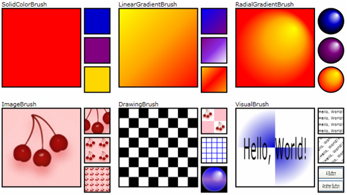
For more information, see WPF brushes overview.
WPF also includes 3D rendering capabilities that integrate with 2D graphics to allow the creation of more exciting and interesting user interfaces. For example, the following figure shows 2D images rendered onto 3D shapes:
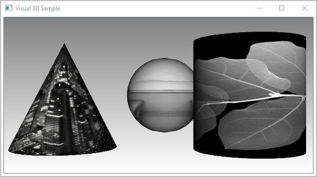
For more information, see 3D graphics overview.
WPF animation support lets you make controls grow, shake, spin, and fade to create interesting page transitions and more. You can animate most WPF classes, even custom classes. The following figure shows a simple animation in action:
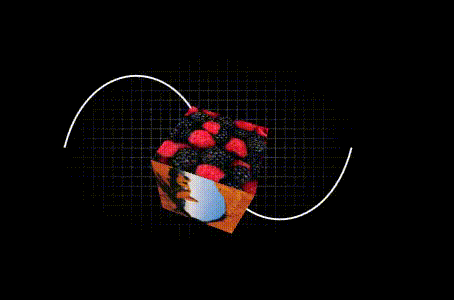
For more information, see Animation overview.
To provide high-quality text rendering, WPF offers the following features:
As a demonstration of text integration with graphics, the following figure shows the application of text decorations:
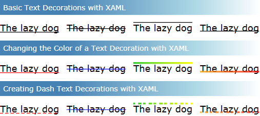
For more information, see Typography in Windows Presentation Foundation.
Up to this point, you've seen the core WPF building blocks for developing applications:
Often, though, the basics aren't enough for creating and managing a truly distinct and visually stunning user experience. The standard WPF controls might not integrate with the desired appearance of your application. Data might not display in the most effective way. Your application's overall user experience might not suit the default look and feel of Windows themes.
For this reason, WPF provides various mechanisms for creating unique user experiences.
The main purpose of most of the WPF controls is to display content. In WPF, the type and number of items that can constitute the content of a control is referred to as the control's content model. Some controls can contain a single item and type of content. For example, the content of a TextBox is a string value that's assigned to the Text property.
Other controls, however, can contain multiple items of different types of content; the content of a Button, specified by the Content property, can contain various items including layout controls, text, images, and shapes.
For more information on the kinds of content that's supported by various controls, see WPF content model.
Although the main purpose of XAML markup is to implement an application's appearance, you can also use XAML to implement some aspects of an application's behavior. One example is the use of triggers to change an application's appearance based on user interactions. For more information, see Styles and templates.
Other controls and shapes typically construct the default user interfaces for WPF controls. For example, a Button is composed of both ButtonChrome and ContentPresenter controls. The ButtonChrome provides the standard button appearance, while the ContentPresenter displays the button's content, as specified by the Content property.
Sometimes the default appearance of a control might conflict with the overall appearance of an application. In this case, use a ControlTemplate to change the appearance of the control's user interface without changing its content and behavior.
For example, a Button raises the Click event when it's clicked. By changing the template of a button to display an Ellipse shape, the visual aspect of the control changes, but the functionality doesn't. You can still click on the visual aspect of the control and the Click event is raised as expected.
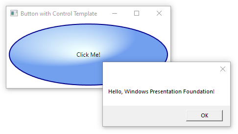
Whereas a control template lets you specify the appearance of a control, a data template lets you specify the appearance of a control's content. Data templates are frequently used to enhance how bound data is displayed. The following figure shows the default appearance for a ListBox that's bound to a collection of Task objects, where each task has a name, description, and priority:
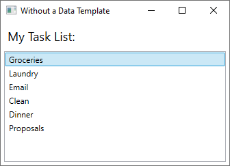
The default appearance is what you'd expect from a ListBox. However, the default appearance of each task contains only the task name. To show the task name, description, and priority, change the default appearance of the ListBox control's bound list items using a DataTemplate. Here's an example of applying a data template that was created for the Task object.
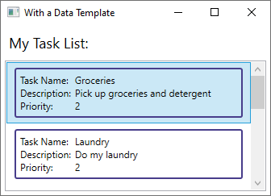
The ListBox retains its behavior and overall appearance and only the appearance of the content being displayed by the list box has changed.
For more information, see Data templating overview.
Styles enable developers and designers to standardize on a particular appearance for their product. WPF provides a strong style model, the foundation of which is the Style element. Styles can apply property values to types. They can be applied automatically to the everything according to the type or individual objects when referenced. The following example creates a style that sets the background color for every Button on the window to Orange:
<Window
xmlns="http://schemas.microsoft.com/winfx/2006/xaml/presentation"
xmlns:x="http://schemas.microsoft.com/winfx/2006/xaml"
x:Class="SDKSample.StyleWindow"
Title="Styles">
<Window.Resources>
<!-- Style that will be applied to all buttons for this window -->
<Style TargetType="{x:Type Button}">
<Setter Property="Background" Value="Orange" />
<Setter Property="BorderBrush" Value="Crimson" />
<Setter Property="FontSize" Value="20" />
<Setter Property="FontWeight" Value="Bold" />
<Setter Property="Margin" Value="5" />
</Style>
</Window.Resources>
<StackPanel>
<!-- This button will have the style applied to it -->
<Button>Click Me!</Button>
<!-- This label will not have the style applied to it -->
<Label>Don't Click Me!</Label>
<!-- This button will have the style applied to it -->
<Button>Click Me!</Button>
</StackPanel>
</Window>
Because this style targets all Button controls, the style is automatically applied to all the buttons in the window, as shown in the following figure:
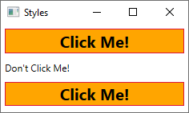
For more information, see Styles and templates.
Controls in an application should share the same appearance, which can include anything from fonts and background colors to control templates, data templates, and styles. You can use WPF's support for user interface resources to encapsulate these resources in a single location for reuse.
The following example defines a common background color that is shared by a Button and a Label:
<Window
xmlns="http://schemas.microsoft.com/winfx/2006/xaml/presentation"
xmlns:x="http://schemas.microsoft.com/winfx/2006/xaml"
x:Class="SDKSample.ResourcesWindow"
Title="Resources Window">
<!-- Define window-scoped background color resource -->
<Window.Resources>
<SolidColorBrush x:Key="defaultBackground" Color="Red" />
</Window.Resources>
<!-- Button background is defined by window-scoped resource -->
<Button Background="{StaticResource defaultBackground}">One Button</Button>
<!-- Label background is defined by window-scoped resource -->
<Label Background="{StaticResource defaultBackground}">One Label</Label>
</Window>
For more information, see How to define and reference a WPF resource.
Although WPF provides a host of customization support, you may encounter situations where existing WPF controls do not meet the needs of either your application or its users. This can occur when:
At this point, however, you can take advantage of one of three WPF models to create a new control. Each model targets a specific scenario and requires your custom control to derive from a particular WPF base class. The three models are listed here:
User Control Model
A custom control derives from UserControl and is composed of one or more other controls.
Control Model A custom control derives from Control and is used to build implementations that separate their behavior from their appearance using templates, much like most WPF controls. Deriving from Control allows you more freedom for creating a custom user interface than user controls, but it may require more effort.
Framework Element Model.
A custom control derives from FrameworkElement when its appearance is defined by custom rendering logic (not templates).
For more information on custom controls, see Control authoring overview.